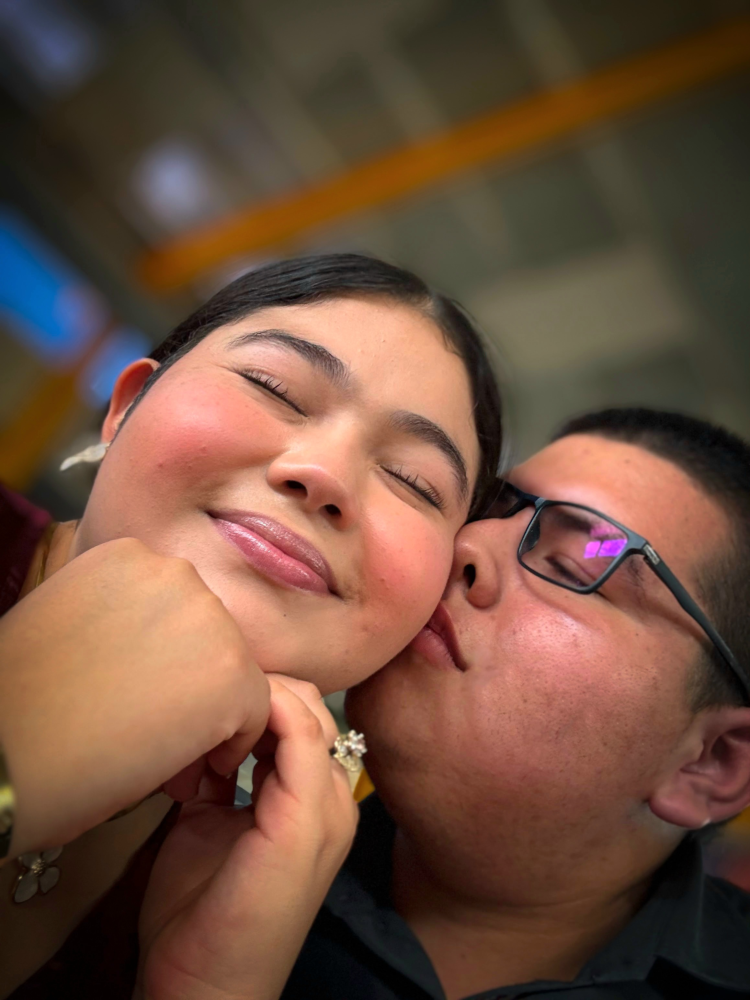
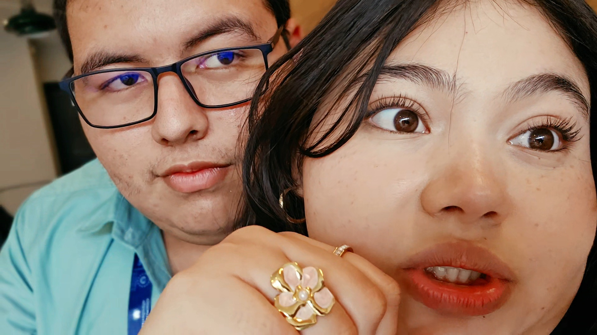

Para ti, mi niña 💛
Hoy quería darte unas flores amarillas en persona, pero esta vez no se pudo...
Así que aunque no pueda estar ahí para entregártelas con mis propias manos, no quería dejar pasar el día sin darte aunque sea un pequeño detalle.
Porque sí, las flores de verdad tendrán que esperar un poquito más... pero esas te las debo.
Y cuando llegue el momento, espero poder entregarte las flores que hoy no pude darte.
Mientras tanto, recibe estas virtuales, mi flaca. 🌼
Un pequeño jardín para ti
Toca una flor, mi Bartolita.
Un par de recuerdos
Dos momentos que quería tener cerca hoy.


Hay algo que quería decirte...
Ábreme, Bartolita 💛
Estas no cuentan como las flores que te debo...
Porque esas te las voy a dar en persona.
Estas son solamente un adelanto. 🌼
Hay personas que hacen que los días normales sean un poquito más bonitos.
Y tú eres una de esas personas.
¿Una más?
Flores creadas: 0
Feliz 21 de septiembre, Bartolita 💛
Hoy son virtuales...
Las de verdad están pendientes. 🌼
Cuando nos volvamos a ver, te debo un ramo.
Con cariño,
tu Bartolo.
FIN... o apenas el comienzo de otro recuerdo. 💛